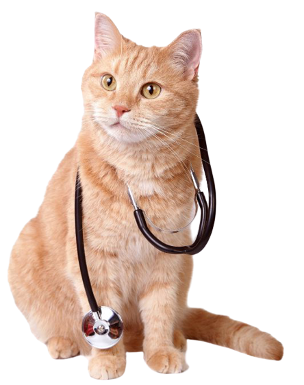

Veterinario de cabecera

Cuando sumamos un nuevo integrante a la familia es indispensable visitar al veterinario para establecer un plan de vacunación y desparasitación correspondiente a la edad y al caso particular de cada animal, pero ademas para establecer un vinculo entre el profesional y la mascota. Así como el ser humano, ellos tambien necesitan un medico de cabecera para visitar todos los años. Él también nos indicará el plan alimentario correcto para el animal.